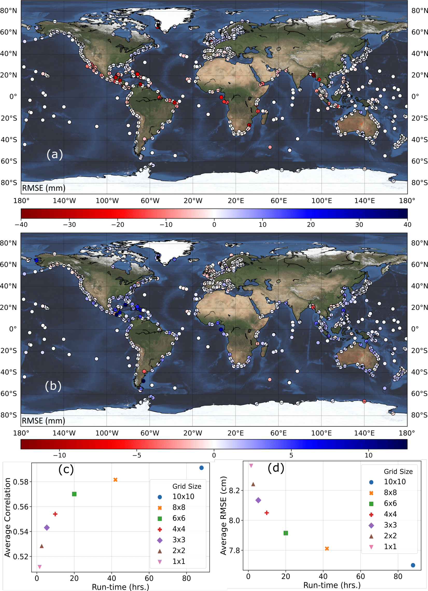
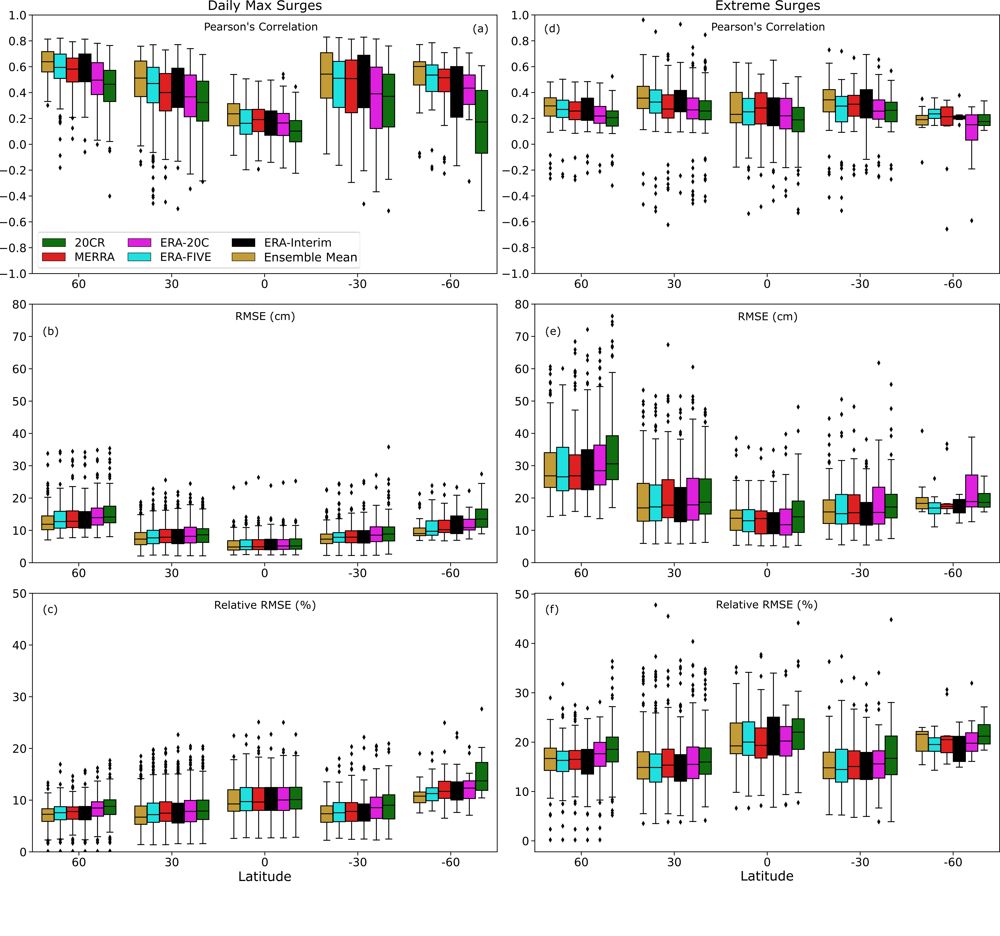

Background
We validate the surge reconstructions for the different reanalysis products and individual tide gauges using a 10-fold cross-validation. As the five reanalysis products have different start and end times, the validation periods (or fold sizes) for which the performance metrics are derived are also different (surge reconstructions derived with the longer-term reanalyses have longer validation periods). The validation results are provided in the metadata section of the corresponding surge reconstruction (refer Table 2 for the respective DOIs).
Sensitivity Analysis
Conventionally, SLP and wind speed are the two main predictors used to model storm surges with statistical or numerical approaches. Hence, we explore whether dropping some of the predictors used in Tadesse et al. (2020) has a significant impact on the results. We first establish a baseline scenario that only uses SLP, u10, and v10 as predictors. Then, we add precipitation as an additional predictor and compare the validation results against the baseline scenario (Figure 2a). We repeat the same with SST (Figure 2b). All predictors for this experiment come from the ERA-Interim reanalysis. At more than 92% of the tide gauges adding precipitation as a predictor changes the model accuracy, expressed as Root Mean Square Error (RMSE), by less than 5mm; for SST, the same is true for 99% of the tide gauges. hence, we chose the baseline model-setup to generate the GSSR database.
In the second phase of the sensitivity analysis, we identify the optimal area around tide gauges from where predictor information is considered to train/validate the data-driven models; We explore here the optimal size of the area around a tide gauge that reconciles a tradeoff between model accuracy and computation time. To this end, we test box sizes of 1 x 1, 2 x 2, 3 x 3, 4 x 4, 6 x 6, and 8 x 8 and train/validate the data-driven models and compare model accuracies with the baseline case that uses a 10 x 10 box. The results (Figures 2c and 2d) indicate that an area of 6 x 6 is the optimal choice (i.e., shortest distance to upper left and lower left corners) considering model accuracy (measured in RMSE and Pearson’s Correlation) and computational time (measured in hours). The latter includes the time for extracting the predictors and training and validating the model. Results are shown for ERA-Interim and differences in computation time for different box sizes are much larger for MERRA-2 and ERA5. Hence, we use a 6 x 6 box around each tide gauge when developing the GSSR database.
Reconstruction Validation
To allow for a more direct comparison across all surge reconstructions, we select a common period (1980 – 2010) which is covered by all five reanalysis products. We validate the reconstructions during this period in terms of Pearson’s correlation, RMSE, and RRMSE, and show the variability (measured as standard deviation) of model accuracy

We also compare the surge reconstructions with observations from the perspective of extremes. For each tide gauge, observed surges above the 95th percentile threshold are compared with the simulated values (Figure 4). When considering the 95th percentile threshold, some tide gauges with short records have only very few data points leading to insignificant correlation coefficients; these are not shown in Figure 4 and as a result the number of tide gauges in Figure 4 is slightly lower than that of Figure 3. We find an average RMSE of 22 cm (std = 9.9) for extratropical regions and 15 cm (std = 8.5) for tropical regions. Average correlation is 0.32 (std = 0.16) for extratropical regions and 0.31 (std = 0.25) in tropical regions. For 65% of tide gauges the same reanalysis that gives the best validation results for daily maximum surges also gives the best validation results for the extremes, whereas in 35% of the cases a different reanalysis leads to better results when only focusing on extremes.

We also show a spatial distribution (summarized in 30-degree bands) of the validation of all five surge reconstructions in addition to the ensemble mean. The ensemble mean is computed by taking the average of the five surge reconstructions at a daily time step. This time series is then validated against the observed surge. The ensemble mean has relatively higher model accuracy in most places especially in higher latitudes.
